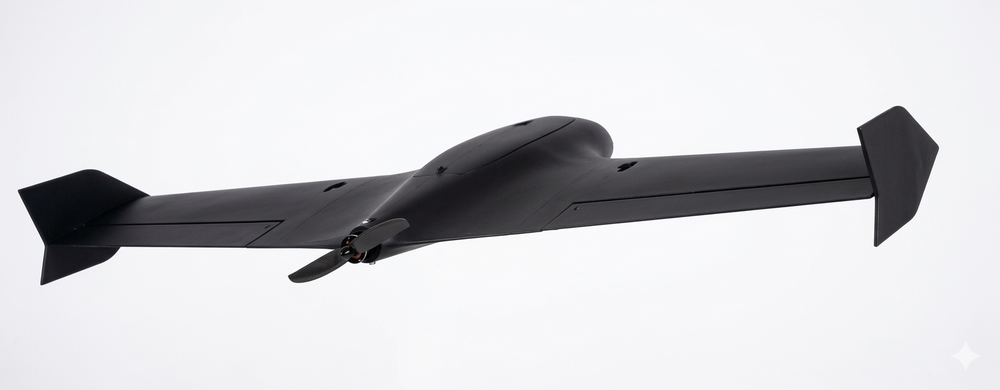
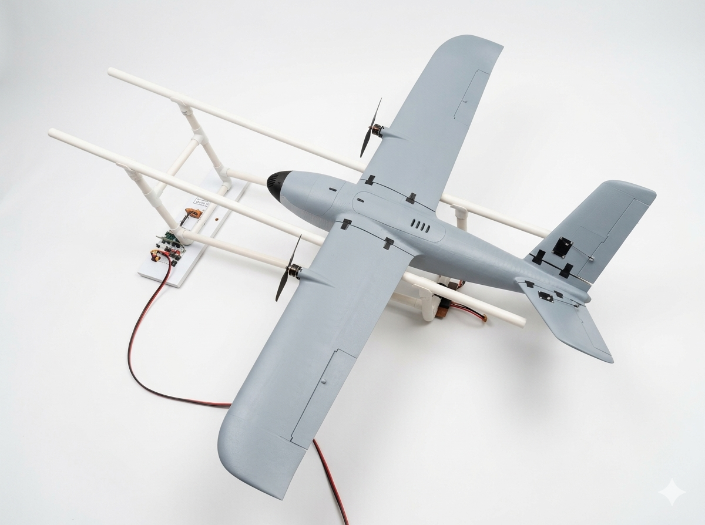
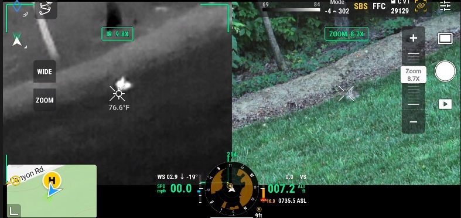
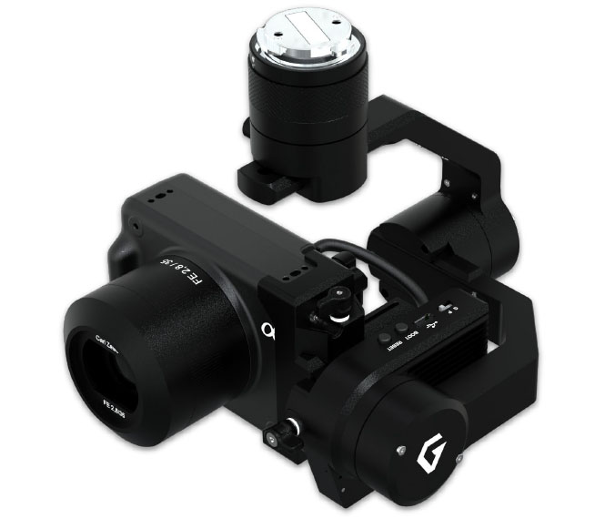
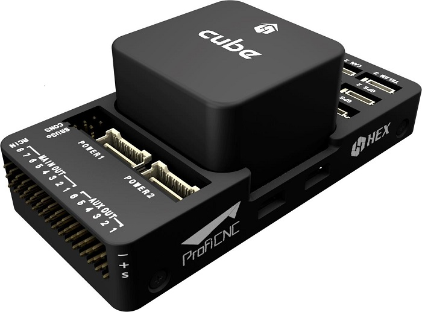
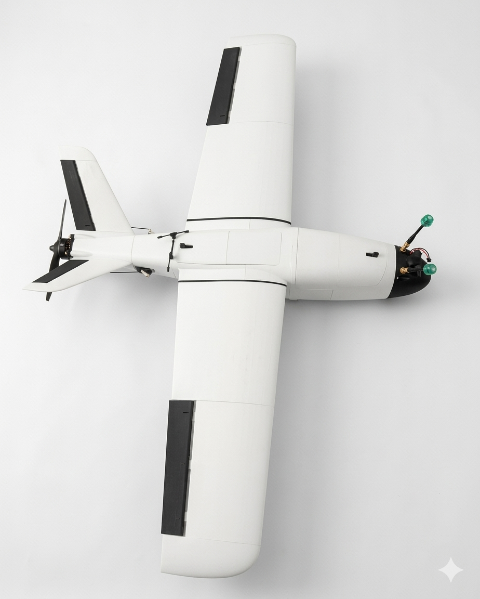
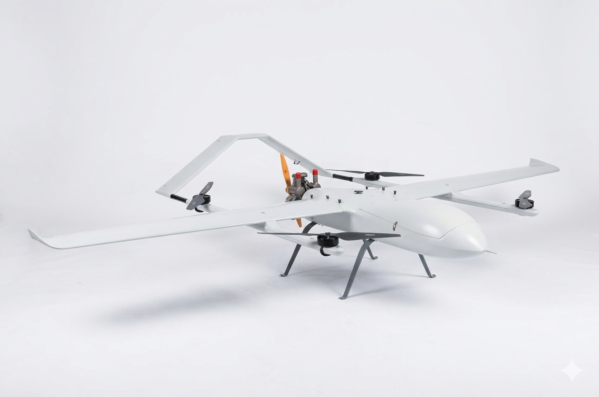

Arquitetura e dimensionamento
Tradução do conceito de operação em requisitos, configuração, orçamento de massa e energia, interfaces e critérios de desempenho.
Desenvolvimento e integração de sistemas aéreos não tripulados configurados em torno da aplicação, do ambiente operacional e da carga útil.
Da arquitetura inicial à integração de aviônicos, sensores e componentes, a Sirius conecta disciplinas para transformar um requisito de missão em uma solução tecnicamente coerente e verificável.

Perfil de voo, alcance pretendido, carga útil, enlaces, energia, ambiente, logística e manutenção influenciam a configuração do sistema. A Sirius organiza essas variáveis desde o início para construir uma arquitetura equilibrada, com interfaces definidas e escolhas técnicas rastreáveis.
O escopo pode abranger uma disciplina específica ou a integração do sistema completo, conforme maturidade, risco e objetivo do projeto.
Tradução do conceito de operação em requisitos, configuração, orçamento de massa e energia, interfaces e critérios de desempenho.
Desenvolvimento de aeronaves de asa fixa, VTOL e configurações híbridas, além de partes, suportes e componentes dedicados.
Integração de piloto automático, navegação, sensores inerciais, dados de voo, atuação e distribuição elétrica.
Compatibilização de motores, hélices, controladores, baterias e arquitetura de potência com o perfil de missão.
Telemetria, comando e controle, transmissão de dados e integração com a estação de solo dentro do escopo contratado.
Integração mecânica, elétrica e lógica de sistemas eletro-ópticos, imageadores, sensores especiais e payloads dedicados.

A engenharia de UAVs exige que aerodinâmica, estrutura, propulsão, eletrônica, software embarcado, comunicação e carga útil funcionem como um único sistema. A Sirius estrutura interfaces, requisitos e verificações para que cada subsistema contribua para a missão.
Selecionamos e integramos tecnologias compatíveis com os objetivos do projeto. Marcas e componentes ilustrados representam classes de solução, não uma configuração fixa.

Integração de vídeo visível, térmico ou outros dados de missão para apoiar observação, inspeção e análise.

Definição de montagem, alimentação, controle, comunicação e campo de visão para payloads eletro-ópticos.

Integração do controlador de voo aos sensores, atuadores, energia, telemetria e lógica operacional da plataforma.
As escolhas de configuração são conduzidas pelo cenário operacional: necessidade de decolagem vertical, eficiência em cruzeiro, área disponível, carga útil, transporte, montagem e suporte em campo.


Cada aplicação exige combinação própria de plataforma, sensores, autonomia pretendida, comunicação e processamento.
Integração de câmeras e sensores para aquisição organizada de dados georreferenciados.
Configurações voltadas à coleta visual e térmica em ativos, corredores e áreas de difícil acesso.
Plataformas e payloads para observação persistente, acompanhamento ambiental e apoio à consciência situacional.
Bancos de ensaio voadores, demonstradores tecnológicos e integração de novos sensores ou algoritmos.
O desenvolvimento avança em ciclos de definição, integração e evidência. As atividades e entregáveis são proporcionais à maturidade e à criticidade do projeto.
Cenário de uso, ambiente, carga útil, restrições, interfaces, logística e critérios de sucesso.
Configuração da plataforma, subsistemas, orçamento de massa e energia e definição das principais interfaces.
Detalhamento, seleção de componentes, fabricação ou adaptação e preparação da integração.
Checagens funcionais, ensaios de bancada, análise das interfaces e progressão de testes conforme o plano.
Documentação, treinamento acordado, suporte técnico e plano de melhorias para os próximos ciclos.
Conceito de operação, requisitos e arquitetura do sistema.
Especificação de interfaces e configuração de subsistemas.
Projeto de componentes, suportes e integrações conforme contratação.
Plano, registros e relatórios das verificações executadas.
Documentação técnica, configuração de entrega e treinamento acordado.
O perfil institucional da Sirius Dynamics Technology no diretório da ABIMDE reúne atuação em aeronaves de asa fixa, partes e peças, sistemas eletro-ópticos, sensores aeronáuticos e aeronaves remotamente pilotadas — UAVs e VANTs.
Ver perfil oficial na ABIMDE ↗Desempenho, configuração, disponibilidade de componentes, atividades de ensaio e documentação são definidos após avaliação técnica. Autorizações de operação, homologações e demais requisitos aplicáveis dependem da configuração, do uso pretendido e das autoridades competentes.